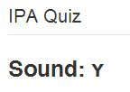
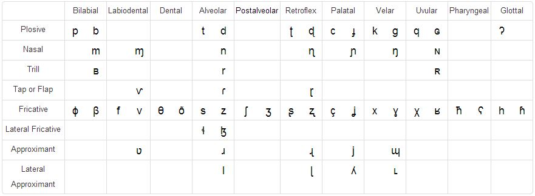
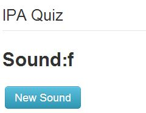
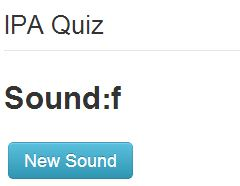
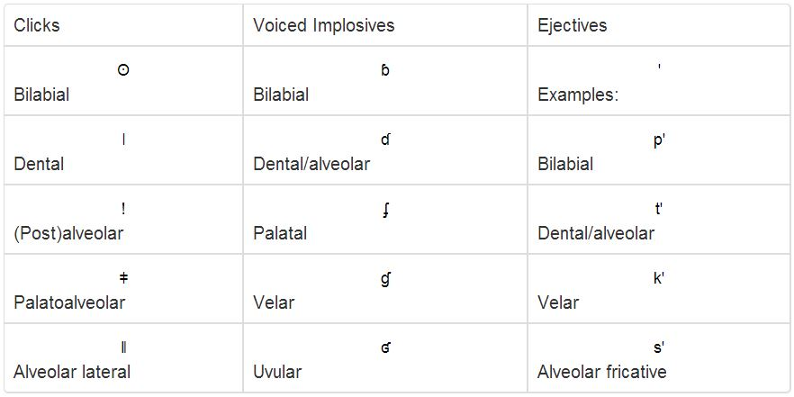

How to use the tools
Below you'll find information as to what each of the widgets do, and how to use them.
To use the IPA Converter, start by inputing a word into the input box above the submit button.

The IPA Converter will look through a dictionary to check if it has to IPA symbols associated with that word. If it does, the converter will output the same word, but spelled with phonetic alphabet symbols.

If you have the IPA charts on your page, when you hover over a symbol, the correct chart containing that symbol will automatically be displayed, and give helpful pop-ups that instruct you how to pronounce that symbol.
You can also click on the symbol you are hovering over to hear its pronounciation
You can test your understanding with the IPA Quiz. Given a symbol, see if you can come up with a word that contains that symbol
The IPA Quiz works by pulling a random symbol from our dictionary, and displaying it next to the "Sound" label. We made sure to only pull out symbols associated with the language you're learning
Below the symbol you'll find two buttons, and an input field. You can use the "New Sound" button to randomly select a new symbol. When you're ready to guess, you can type in a word into the input field and press the "Submit" button

If you need a hint, press the "Play Sound" button, to hear what the symbol sounds like
Here you'll find descriptions of each of the charts, and how to take full advantage of their functionality
All the charts share these key functionalities:
- If you click on a symbol in the table, you can hear it's pronounciation
- Hovering over the labels in any chart will give you a description of what that label means
Below is what the Pulmonic consanants chart looks like:
When you click on a symbol, aside from playing the sound of the symbol, you can get extra functionality if you have IPAquiz on the webpage
 

Clicking on a symbol within the chart will change the symbol being guessed in the quiz. This allows you to pick a symbol in the chart that you want to test yourself on
Here is the Non Pulmonic consanants chart
All the symbols here are not included in the English language, so clicking on a symbol does not change the quiz symbol
This is the chart of Vowels

This chart works a little bit differently than the others
There are 3 main columns: "Front", "Central", and "Back". Below each of these columns you will see a dot: "•". The dot below a dot in that respective column represents another pair of vowels within that column. This may get confusing because the columns actually slant to the right as you go down, but just follow the dots and you'll know where everything belongs

Next to every dot there will either be 1 or 2 symbols. The symbol to the right is rounded, meaning you physically round your lips as you are pronouncing the symbol. The symbol to the left is unrounded, so you can voice it without doing anything fancy.
To embed any of these components into your own website, follow this link to our github repository:
https://github.com/olearym/MITx-Project-1/tree/master/IPA-InterfaceDownload all the files in the IPA-Interface folder to the same folder that you're storing your website on
Below you'll find instructions as what to insert at the head and body of your html
Include these tags at the head of your html:
These script tags include all the files you need no matter what widget you are using on your webpage
<META http-equiv="Content-Type" content="text/html; charset=utf-8" /> <script src="http://code.jquery.com/jquery-1.10.1.min.js"></script> <script src="http://code.jquery.com/jquery-migrate-1.2.1.min.js"></script> <script src = "js/bootstrap.min.js"></script> <link href = "css/bootstrap.css" rel = "stylesheet"></link> <script src="IPAdata.js"></script> <script src="IPAconverter.js"></script> <script src="IPAcharts.js"></script> <script src="IPAquiz.js"></script>
After you have the "META", "script", and "link" tags, you will need to define where each widget will go on you webpage:
To get the IPA Converter, insert this div into the html of your webpage:
<div class="IPAConverter"></div>
For the charts:
-
Pulmonic Consanants:
<div class="IPAPulmonic"></div>
-
Non-Pulmonic Consanants:
<div class="IPANonPulmonic"></div>
-
Vowels:
<div class = "IPAVowels"></div>
To have the charts tabbed, you'll need to include much more html, but we decided to make it easy. Simply copy and paste the html below where you want the tabbed charts in your code:
<div class = "tabbable"> <ul class = "nav nav-tabs"> <li id = "NPCTab" class = "active"><a href = "#tab1" data-toggle="tab">Pulmonic Consanants</a></li> <li id = "PCTab"><a href = "#tab2" data-toggle="tab">Non-Pulmonic Consanants</a></li> <li id = "NounTab"><a href = "#tab3" data-toggle="tab">Vowels</a></li> </ul> <div class = "tab-content"> <div class = "tab-pane active" id="tab1"> <div class="IPAPulmonic"></div> <h5 style = "text-align: center">Within each column, consanants on the right are voiced</h5> </div> <div class = "tab-pane" id = "tab2"> <div class = "IPANonPulmonic"></div> </div> <div class = "tab-pane" id = "tab3"> <div class = "IPAVowels"></div> <h5 style = "text-align: center">Where there is a "•", the vowel to the right is rounded</h5> </div> </div> </div>
For the Quiz:
<div class="IPAQuiz"></div>
Main Developers
Megan O'Leary and Daniel Sanchez
Project Advisor
Haoqi Zhang